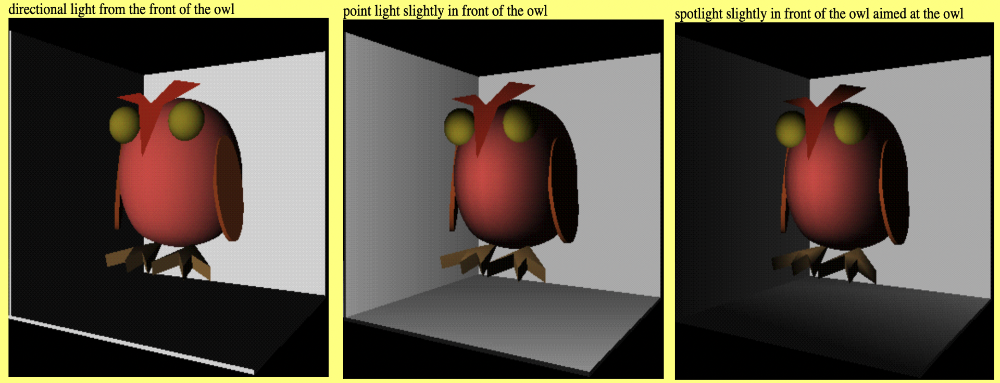
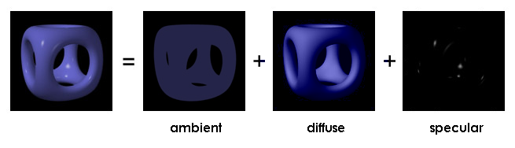
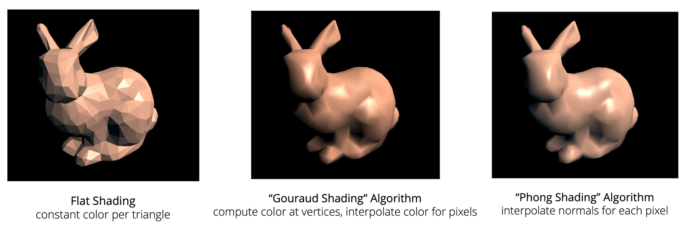

Lighting and Shading
When we generate the graphics from 3D models, lighting is one of the most important parts to make the graphics look appealing. That is why we can always see professional photographers use additional light sources to make their artworks prettier. While in the computer graphics, we need to do set all the lightings by ourselves.
Light sources

- Directional light - produced by a light source an infinite distance from the scene., All of the
light rays emanating from the light strike the polygons in the scene from a single parallel
direction, and with equal intensity everywhere.
- Sunlight can be modeled as a directional light.
- Characterized by color, intensity, and direction.
-
Point light - a light that gives off equal amounts of light in all directions. Polygons and parts of polygons that are closer to the light appear brighter than those that are further away. The angle at which light from a point light source hits an object is a function of the positions of both the object and the light source. The intensity of the light source hitting the object is a function of the distance between them. Different graphics programs may ( or may not ) allow the programmer to adjust the falloff function in different ways.
- A bare bulb hanging from a cord is essentially a point light.
- Characterized by color, intensity, location, and falloff function.
-
Spotlight - light that radiates light in a cone with more light in the center of the cone, gradually tapering off towards the sides of the cone. The simplest spotlight would just be a point light that is restricted to a certain angle around its primary axis of direction - Think of something like a flashlight or car headlight as opposed to a bare bulb hanging on a wire. More advanced spotlights have a falloff function making the light more intense at the center of the cone and softer at the edges.
- Characterized as a point light, an axis of direction, a radius about that axis, and possibly a radial falloff function.
-
Ambient light - Ambient light sources illuminate objects even when no other light source is present. The intensity of ambient light is independent of direction, distance, and other objects, meaning the effect is completely uniform throughout the scene. -
- However, there is no such thing as ambient light source in real life. In the real dark environment, we still can see things is just because there are still some light source (for example moon which reflect the sun light) and the lights bounce between objects thus lighting the environment a little bit.
- When not using PBR rendering, we add ambient light ensures that objects are visible even in complete darkness
Lighting types

Just like we are painting using mathematics, we describe the lights on a object using three components: ambient, diffuse, specular. Before looking into the concrete concept, we first set the mathematic structure of the data we are going to discuss by some simple pseudo code.
class Color{
// 0 - 255
public:
int r;
int g;
int b;
Color(int _r, int _g, int _b){
r = _r;
g = _g;
b = _b;
}
};
Color ColorDot(Color a, Color b){
return Color(a.r * b.r, a.g * b.g, a.b * b.b);
}
// All direction vectors are normalized
Vec3 l = Pos_light - Pos_object; // Light vector
Vec3 v = Pos_camera - Pos_object; // View vector
Vec3 n; // Surface normal vector
Vec3 r = 2 * dot(n, l) * n - l; // Perfect reflection vector
double Distance(Vec3 cam, Vec3 obj); // calculates the distance
// between the light source and the object
// Use this to calculate light intensity
- Specular light (Phong reflection, Blinn-Phong reflection) - is the highlight and the shininess of the object we see.
Color c_sp; // specular output color
Color c_l; // light color
Color c_p; // highlight color
double p; // specular-reflection exponent (higher is sharper falloff)
// Phong model
c_sp = ColorDot(c_l, c_p) * dot(r, v)^p;
// Blinn-Phong model
Vec3 h = Normalize(l + v);
c_sp = ColorDot(c_l, c_p) * dot(h, n)^p;
- Diffuse light (modeled using Lambertian reflection) - is the light reflected by the surface but scattered.
Color c_dif; // diffuse output color
Color c_l; // light color
Color c_r; // surface color
c_dif = ColorDot(c_r, c_l) * dot(n, l);
- Ambient light -
Color c_am; // ambient output color
Color c_a; // ambient color
Color c_r; // surface color
c_am = ColorDot(c_r, c_a);
Finally, we add them up:
Color c_out;
c_out = (c_sp + c_dif) * (1 / (Distance(Pos_light, Pos_obj)^2) + c_am;
Note: Those models are physically incorrect, which is why I describe them as painting instead of simulation. The core reason is that it doesn't satisfy the energy conservation. However, as long as we are using the rasterization instead of ray-tracing, the reflection and refraction always have to be achieved by some techniques.
Shading
As we know, objects' surfaces are all approximated by polygons. This means that we need to do some calculations to make the objects look smooth. There are mainly three methods:

-
Flat shading - each entire polygon is drawn with the same colour; need to know one normal for the entire polygon; fast; lighting equation used once per polygon.
-
Goraud shading - colours are interpolated across the polygon; need to know a normal for each vertex of the polygon; slower than flat shading; lighting equation used at each vertex.
-
Phong shading - normals are interpolated across the polygon; need to know a normal for each vertex of the polygon; better at dealing with highlights than Goraud shading; slower than Goraud shading; lighting equation used at each pixel.
Appendix (Blinn-Phong model HLSL & GLSL code)
HLSL:
struct VS_INPUT
{
float4 Position : POSITION;
float3 Normal : NORMAL;
float2 TexCoord : TEXCOORD;
};
struct VS_OUTPUT
{
float4 Position : SV_POSITION;
float4 WorldPosition : POSITION;
float3 Normal : NORMAL;
float2 TexCoord : TEXCOORD;
};
struct NF3D_LIGHT_OMNIDIRECTIONAL
{
float4 Diffuse;
float4 Ambient;
float3 Position;
float3 Attitude;
float Range;
int BindSlot;
};
//--------------------------------------------------------------------------------------
// Constant Buffer Variables
//--------------------------------------------------------------------------------------
cbuffer CB_PROJECTION : register(b0)
{
matrix Projection;
}
cbuffer CB_VIEW : register(b1)
{
matrix View;
float4 CameraPosition;
}
cbuffer CB_WORLD : register(b2)
{
matrix World;
}
cbuffer Light : register(b5)
{
NF3D_LIGHT_OMNIDIRECTIONAL light;
};
//--------------------------------------------------------------------------------------
// Vertex Shader
//--------------------------------------------------------------------------------------
VS_OUTPUT VS(VS_INPUT Input)
{
VS_OUTPUT Output = (VS_OUTPUT)0;
// Change the position vector to be 4 units for proper matrix calculations.
Input.Position.w = 1.0f;
// Aply the perspective to every vertex.
Output.Position = mul(Input.Position, World);
Output.WorldPosition = Output.Position;
Output.Position = mul(Output.Position, View);
Output.Position = mul(Output.Position, Projection);
// Normalise the normal vector.
Output.Normal = mul(Input.Normal, (float3x3)World);
Output.Normal = normalize(Output.Normal);
// Transfer the texture coordinates.
Output.TexCoord = Input.TexCoord;
return Output;
}
//--------------------------------------------------------------------------------------
// Pixel Shader
//--------------------------------------------------------------------------------------
float4 PS(VS_OUTPUT Input) : SV_Target
{
// https://brooknovak.wordpress.com/2008/11/13/hlsl-per-pixel-point-light-using-phong-blinn-lighting-model/
// Phong relfection is ambient + light-diffuse + spec highlights.
// I = Ia*ka*Oda + fatt*Ip[kd*Od(N.L) + ks(R.V)^n]
// Get light direction for this fragment
float3 lightDir = normalize(light.Position - Input.WorldPosition);
// Note: Non-uniform scaling not supported
float diffuseLighting = saturate(dot(Input.Normal, -lightDir)); // per pixel diffuse lighting
// Introduce fall-off of light intensity
diffuseLighting *= ((length(lightDir) * length(lightDir)) / dot(light.Position - Input.WorldPosition, light.Position - Input.WorldPosition));
// Using Blinn half angle modification for perofrmance over correctness
float3 h = normalize(normalize(CameraPosition - Input.WorldPosition) - lightDir);
float specLighting = pow(saturate(dot(h, Input.Normal)), 2.0f);
return saturate(light.Ambient + (light.Diffuse * diffuseLighting * 0.6f) + (specLighting * 0.5f));
}
GLSL:
- Vertex shader (Phong model)
attribute vec3 inputPosition;
attribute vec2 inputTexCoord;
attribute vec3 inputNormal;
uniform mat4 projection, modelview, normalMat;
varying vec3 normalInterp;
varying vec3 vertPos;
void main() {
gl_Position = projection * modelview * vec4(inputPosition, 1.0);
vec4 vertPos4 = modelview * vec4(inputPosition, 1.0);
vertPos = vec3(vertPos4) / vertPos4.w;
normalInterp = vec3(normalMat * vec4(inputNormal, 0.0));
}
- Fragment shader
precision mediump float;
in vec3 normalInterp;
in vec3 vertPos;
uniform int mode;
const vec3 lightPos = vec3(1.0, 1.0, 1.0);
const vec3 lightColor = vec3(1.0, 1.0, 1.0);
const float lightPower = 40.0;
const vec3 ambientColor = vec3(0.1, 0.0, 0.0);
const vec3 diffuseColor = vec3(0.5, 0.0, 0.0);
const vec3 specColor = vec3(1.0, 1.0, 1.0);
const float shininess = 16.0;
const float screenGamma = 2.2; // Assume the monitor is calibrated to the sRGB color space
void main() {
vec3 normal = normalize(normalInterp);
vec3 lightDir = lightPos - vertPos;
float distance = length(lightDir);
distance = distance * distance;
lightDir = normalize(lightDir);
float lambertian = max(dot(lightDir, normal), 0.0);
float specular = 0.0;
if (lambertian > 0.0) {
vec3 viewDir = normalize(-vertPos);
// this is blinn phong
vec3 halfDir = normalize(lightDir + viewDir);
float specAngle = max(dot(halfDir, normal), 0.0);
specular = pow(specAngle, shininess);
// this is phong (for comparison)
if (mode == 2) {
vec3 reflectDir = reflect(-lightDir, normal);
specAngle = max(dot(reflectDir, viewDir), 0.0);
// note that the exponent is different here
specular = pow(specAngle, shininess/4.0);
}
}
vec3 colorLinear = ambientColor +
diffuseColor * lambertian * lightColor * lightPower / distance +
specColor * specular * lightColor * lightPower / distance;
// apply gamma correction (assume ambientColor, diffuseColor and specColor
// have been linearized, i.e. have no gamma correction in them)
vec3 colorGammaCorrected = pow(colorLinear, vec3(1.0 / screenGamma));
// use the gamma corrected color in the fragment
gl_FragColor = vec4(colorGammaCorrected, 1.0);
}
Reference
- Foley, Van Dam, Feiner, and Hughes, "Computer Graphics - Principles and Practice", Chapter 16
- KTH Introduction to Visualization and Computer Graphics Course Slides
- https://en.wikipedia.org/wiki/Computer_graphics_lighting
- https://www.cs.uic.edu/~jbell/CourseNotes/ComputerGraphics/LightingAndShading.html